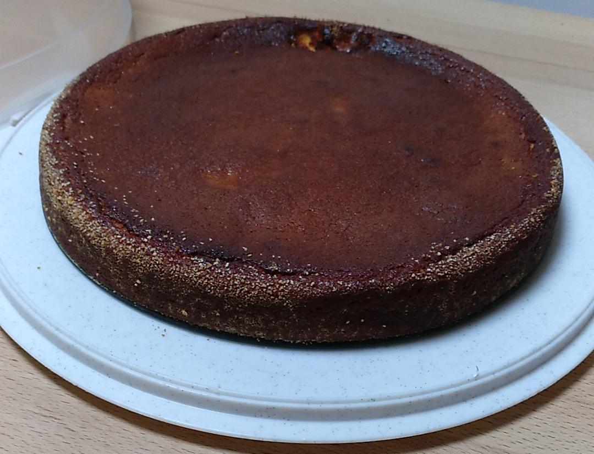
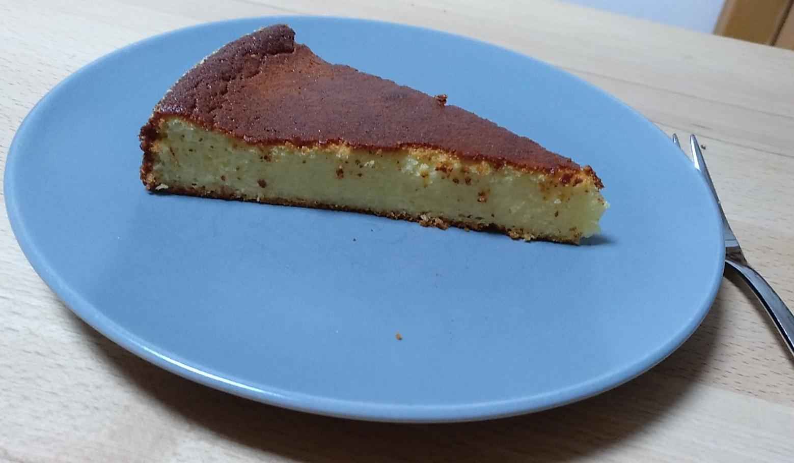

Topfenkuchen (Pia Gassenbauer)


Schwierigkeit:
Dauer:
Zutaten
- 3 Eier
- 1/2kg Topfen
- 20dag Zucker
- 12,5dag Butter
- 2EL Grieß
- Zitronensaft
- 1/2TL Backpulver
- Semmelbrösel
Zubereitung
- Die Eier trennen, das Eiweiß zu Eischnee schlagen.
- Die Butter, den Dotter und den Zucker schaumig rühren.
- Den Topfen, das Backpulver, den Zitronensaft und den Grieß unterrühren.
- Den Eischnee unterheben.
- Eine Backform mit Butter beinfetten, Brösel in die Form geben und die Form drehen, bis der Rand mit Bröseln bedeckt ist.
- Den Ofen auf 180° vorheizen.
- Den Teig in die Form geben.
- Bei 180° ca. 40 Minuten backen.